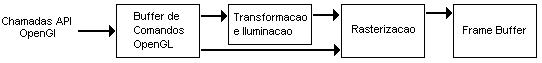

OpenGL é definida como "um programa de interface para hardware gráfico". Na verdade, OpenGL é uma biblioteca de rotinas gráficas e de modelagem, bi (2D) e tridimensional (3D), extremamente portável e rápida. Usando OpenGL é possível criar gráficos 3D com uma qualidade visual próxima de um ray tracer. Entretanto, a maior vantagem na sua utilização é a rapidez, uma vez que usa algoritmos cuidadosamente desenvolvidos e otimizados pela Silicon Graphics, Inc., líder mundial em Computação Gráfica e Animação.
OpenGL não é uma linguagem de programação, é uma poderosa e sofisticada API (Application Programming Interface) para criação de aplicações gráficas 2D e 3D. Seu funcionamento é semelhante ao de uma biblioteca C, uma vez que fornece uma série de funcionalidades. Normalmente se diz que um programa é baseado em OpenGL ou é uma aplicação OpenGL, o que significa que ele é escrito em alguma linguagem de programação que faz chamadas a uma ou mais bibliotecas OpenGL.
As aplicações OpenGL variam de ferramentas CAD a programas de modelagem usados para criar personagens para o cinema, tal como um dinossauro. Além do desenho de primitivas gráficas, tais como linhas e polígonos, OpenGL dá suporte a iluminação, colorização, mapeamento de textura, transparência, animação, entre muitos outros efeitos especiais. Atualmente, OpenGL é reconhecida e aceita como um padrão API para desenvolvimento de aplicações gráficas 3D em tempo real.
Ao invés de descrever a cena e como ela deve parecer, quando se está utilizando OpenGL é preciso apenas determinar os passos necessários para alcançar a aparência ou efeito desejado. Estes passos envolvem chamadas a esta API portável que inclui aproximadamente 250 comandos e funções (200 comandos do core OpenGL e 50 da GLU - OpenGL Utility Library). Por ser portável, OpenGL não possui funções para gerenciamento de janelas, interação com o usuário ou arquivos de entrada/saída. Cada ambiente, como por exemplo o Microsoft Windows, possui suas próprias funções para estes propósitos. Não existe um formato de arquivo OpenGL para modelos ou ambientes virtuais. OpenGL fornece um pequeno conjunto de primitivas gráficas para construção de modelos, tais como pontos, linhas e polígonos. A biblioteca GLU (que faz parte da implementação OpenGL) é que fornece várias funções para modelagem, tais como superfícies quádricas, e curvas e superfícies NURBS (Non Uniform Rational B-Splines) [Woo 1999, Wright 2000].
A palavra pipeline é usada para descrever um processo que pode ter dois ou mais passos distintos. A figura 2.1 mostra uma versão simplificada do pipeline OpenGL. Como uma aplicação faz chamadas às funções API OpenGL, os comandos são colocados em um buffer de comandos. Este buffer é preenchido com comandos, vértices, dados de textura, etc. Quando este buffer é "esvaziado", os comandos e dados são passados para o próximo estágio.

Figura 1.1 - Versão simplificada do pipeline OpenGL
Após a etapa de aplicação das transformações geométricas e da iluminação, é feita a rasterização, isto é, é gerada a imagem a partir dos dados geométricos, de cor e textura. A imagem final, então, é colocada no frame buffer, que é a memória do dispositivo gráfico. Isto significa que a imagem é exibida no monitor [Wright 2000].
Para tornar o código portável, foram definidos tipos de dados próprios para OpenGL. Estes tipos de dados são mapeados dos tipos de dados C comuns, que também podem ser utilizados. Como os vários compiladores e ambientes possuem regras diferentes para determinar o tamanho das variáveis C, usando os tipos OpenGL é possível “isolar” o código das aplicações destas alterações.
Na tabela 3.1, definida tanto por [Woo 1999], como por [Wright 2000], são apresentados os tipos de dados OpenGL, os tipos de dados C correspondentes e o sufixo apropriado. Estes sufixos são usados para especificar os tipos de dados para as implementações ISO C de OpenGL. Pode-se observar que todos os tipos começam "GL", e a maioria é seguido pelo tipo de dado C correspondente.
|
|
|
|
|
| GLbyte | 8-bit integer | signed char | b |
| GLshort | 16-bit integer | short | s |
| GLint, GLsizei | 32-bit integer | int ou long | i |
| GLfloat, GLclampf | 32-bit floating-point | float | f |
| GLdouble, GLclampd | 64-bit floating-point | double | d |
| GLubyte, GLboolean | 8-bit unsigned integer | unsigned char | ub |
| GLushort | 16-bit unsigned integer | unsigned short | us |
| GLuint, GLenum, GLbitfield | 32-bit unsigned integer | unsigned long ou unsigned int | ui |
Tabela 3.1 - Tipos de dados OpenGL
Todos os nomes das funções OpenGL seguem uma convenção que indica de qual biblioteca a função faz parte e, freqüentemente, quantos e que tipos de argumentos a função tem. Todas as funções possuem uma raiz que representa os comandos OpenGL que correspondem às funções. Por exemplo, a função glColor3f possui Color como raiz. O prefixo gl representa a biblioteca gl, e o sufixo 3f significa que a função possui três valores de ponto flutuante como parâmetro. Resumindo, todas as funções OpenGL possuem o seguinte formato:
<PrefixoBiblioteca> <ComandoRaiz> <ContadorArgumentosOpcional> <TipoArgumentosOpcional>
Variações da função do exemplo anterior, glColor3f, podem receber três valores inteiros como parâmetro (glColor3i), três doubles (glColor3d) e assim por diante. Algumas versões da glColor também recebem quatro argumentos. Neste caso, um dos argumentos é usado para especificar o componente alfa (transparência). Esta convenção de adicionar o número e o tipo dos argumentos facilita a memorização da lista de argumentos.